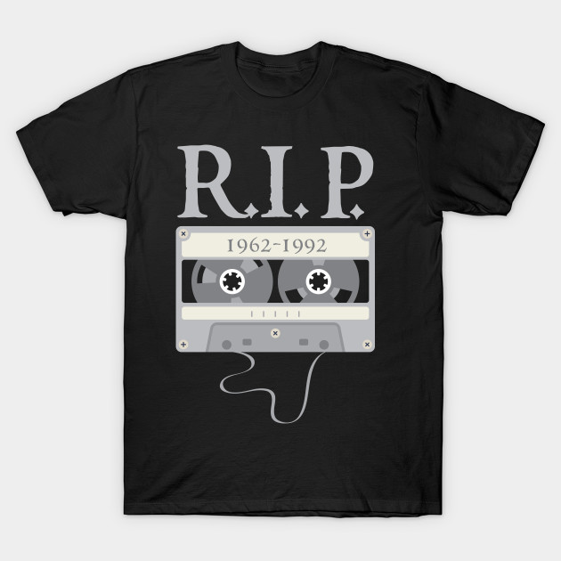
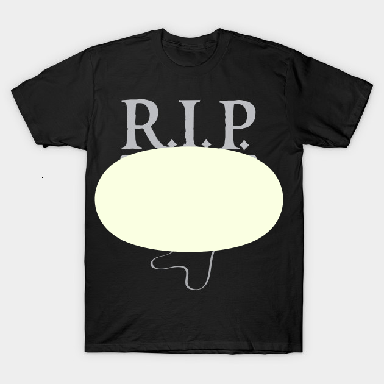
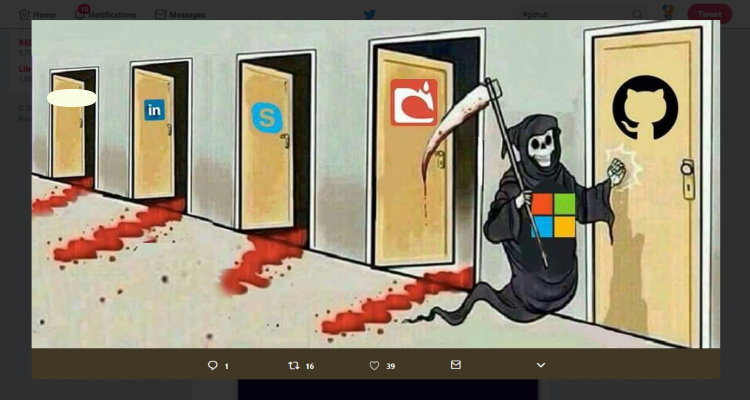
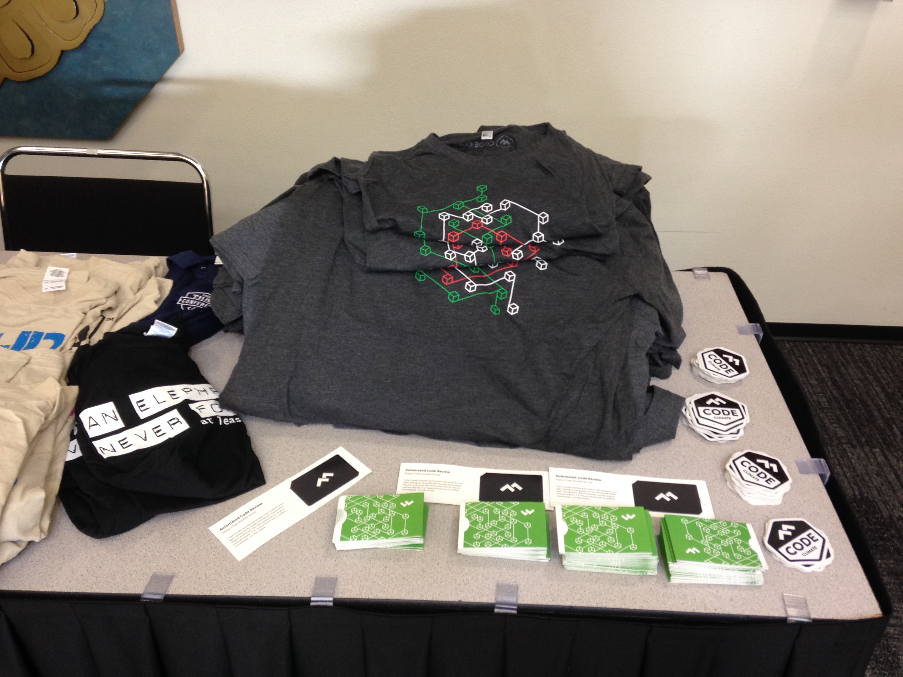

GraphQL
for
Absolute Beginners
by Jhankar Mahbub / @jsdude005
Who is
JS Dude?

- @jsdude005
- Organize Chicago JavaScript Meetup
- Sr. Web Developer, Nielsen
- React, Redux and JavaScript Trainer
- Enjoy Learning, Talking about JavaScript
Jump from 14,000ft

Marathon 2016, 2017

10,000 volts

international Javascript conference, London

We will Discuss
- What is GraphQL
- Compare GraphQL with REST
- How to write and execute GraphQL Query
- Advanced features in GraphQL
- Why you should consider GraphQL
REST
Representational State Transfer

REST
- Widely accepted to design API
- Offers stateless server
- Structured access to resources
Load data by REST


API Gateways

Common Issues
- Very Rigid server contract
- More url makes it more complicated
- Over fetching or under fetching of data
- Versioning could be a pain by creating new API

What is GraphQL
GraphQL
- A query language for APIs
- A frontend-focused API technology
- Fulfill queries at runtime with existing data
- Gives power to ask for exactly what needed
- Minimizes the data provided to the client
- Understandable description of the data in API
- Easier to evolve APIs over time
- Specification: https://facebook.github.io/graphql
GraphQL Model

REST. . . . . . . . . . . . . .GraphQL
GraphQL Approach

Why GraphQL
- More Efficient, Flexible and Powerful
- Rapid iteration, without changing API
- Strong Type System: Schema Definition Language (SDL)
- Validate queries
- It's been used since 2012
- Heavily used by Facebook, github, pinterest, etc.
Query GraphQL
Simple GraphQL

Basic Query
Predict shape of the result
{
hero {
name
}
}
{
"data": {
"hero": {
"name": "R2-D2"
}
}
}
Add fields
Add only the fields needed
{
hero {
name,
id
}
}
{
"data": {
"hero": {
"name": "R2-D2",
"id": "2001"
}
}
}
Arguments
Arguments

REST, can a single set of arguments on query parameters and URL segments
Arguments Anywhere
GraphQL, every field and nested object can get its own set of arguments

One query can replace multiple api
GraphQL Playground
Summary 1
So far...
- REST is very rigid: causes overfetching or Underfetching
- GraphQL is a front end focused API Technology
- Provides exactly what data needed
- Add those fields that you want to use
- Can provide argument anywhere
Quiz Time
What was on the RIP T-shirt?
Advanced Query
Aliases

Fragments
Don't Repeat use fragments

Operation name

Variable
Variable
- Replace the static value by
$variableName - Pass variableName: value
- Transport variables dictionary(usually JSON)

Default Value

Pagination
Pagination

- Skip first two:
friends(first:2 offset:2) - Cursor:
friends(first:2 after:$friendCursor)
Meta Field
- Determine how to handle that data on the client
- Request
__typename, a meta field, at any point in a query - Will return the name of the object type

Mutation
Mutation
- Mutation is for changing data. similar to
POST - Used to create, update or delete data
- Use nested field to get return from mutation
- The structure is almost similar to queries
- Include the word
mutationin the beginning - Mutation can contain multiple fields like a query
Mutation more

- Query fields are executed in parallel
- Mutation fields run in series, one after the other
Validation

Predetermined whether a GraphQL query is valid or not
Field Doesn't exists

There is no error code. Everything is 200 and read error message
Fragment refer itself

Fragment cannot refer itself
Scalar or not

Caching
- REST have end point and you can cache based on parameter
- GraphQL doesn't have uniquely identifiable end point
- Assign Globally unique ID

Subscription
- Real-time link to the server
- Get instant information regarding relevant events
- Client side needs to subscribe to the particular event to get corresponding data
Client-side Integration
Apollo
- Declarative data fetching
- Zero-config caching
- Combine local & remote data
- Vibrant ecosystem
Apollo Client
import ApolloClient from 'apollo-boost';
const client = new ApolloClient();
/graphql
import ApolloClient from 'apollo-boost';
const client = new ApolloClient({
uri: 'https://graphql.example.com'
});


Summary 2
So far...
- Use Query Fragment to reduce duplicate
- Use variable in the query
-
Mutationfor Post(create, update, delete) - Everything is 200. No error code
- Use UniqueID for caching
- Apollo Client for quick development in client side
Quiz Time
What was the first company?
GraphQL Server
Architecture
GraphQL Server
GraphQL server with a connected database
Brand new application


GraphQL server that is a thin layer in front of a number of third party or legacy systems and integrates them through a single GraphQL API

A hybrid approach of a connected database and third party or legacy systems that can all be accessed through the same GraphQL API
Schema Definition
Schema
- Schema is one of the most important concepts
- Specifies the capabilities of the API
- Defines how clients can request the data
- Often seen as a contract between server and client
Declare Schema
- A schema is simply a collection of GraphQL types
- Some special root types

Query,
Mutation, and
Subscription types are the entry points for the requests sent by the client.
Object Types

- Character is a GraphQL Object Type
-
name,appearsInare fields on Character type - String is one of the built-in scalar types
- String! means that the field is non-nullable
- [Episode] represents an array of Episode objects
- [Episode]! represents non-nullable, expect an array (with zero or more items)
Scalar Types
- Int, Float
- String, Boolean
- ID
- Enumeration types
- List and Non-null
- Interface
- Union Types
Schema Argument

- All arguments are named.
- Arguments can be either required or optional
- Can define a default value for optional argument
Query Match

GraphQL service needs to have a Query type with hero and droid fields

Execution
Execution Process
- GraphQL query is executed by a GraphQL server
- Before Executing, Query is validated
- Result mirrors the shape of the requested query
- Typically returns result as JSON
- Needs a type system to execute Query
Query Execution

To execute this query we need a type system
Type System

Execution
- Execution is very simple
- The query is traversed field by field
- Each field has a backend function called
resolver - When a field is executed, the corresponding resolver is called
- If there is no nested types, execution ends.
Advanced Resolver
- Root fields & resolvers
- Asynchronous resolvers
- Trivial resolvers
- Scalar coercion
- List resolvers
Producing the Result
- As each field is resolved, the resulting value is placed into a key-value map
- Starts from the bottom leaf fields of the query
- Continues all the way up to the the root field of the Query
- Collectively produces mirror of the original Query
- Then send the result to the client as JSON
Server Solutions
Covers all popular Programming languages
NodeJS
graphql.js

Python
graphene

Apollo Server
- Apollo Client: GraphQL client for every frontend platform
- Apollo Server: Library for writing GraphQL servers with JavaScript
- Apollo Engine: GraphQL gateway that provides caching, error tracking, and performance tracing
Authorization
Authorization
Delegate authorization logic to business logic layer

It is tempting to place authorization logic in the GraphQL layer like this
We would need to duplicate this code for each entry point into the service
Focus on Query

Authentication
- GraphQL doesn’t really make a prescription about how you handle authentication
- Can use the methods we are familiar with from REST.
- In graphql-js set the token on the context
- Every resolver receives as its third argument
Serving over Http
Rest vs GraphQL
Serving over Http
- GraphQL should be placed after all authentication middleware
- Will have access to the same session & user information
- REST uses uri to find resources
- GraphQL uses entity graph
- GraphQL server operates on a single URL/endpoint
- Usually
/graphql
GET

- This request could be sent via an HTTP GET
http://myapi/graphql?query={me{name}}- Use
operationNameto control which one should be executed
POST
GraphQL POST request should use the application/json content type

- operationName and variables are optional fields
- operationName is only required if multiple operations are present
- Use "application/graphql" Content-Type header
Response
- A query might result in some data and some errors
- Response should returned in the body as JSON format
- If there were no errors returned, the "errors" field should not be present on the response
- Data field would be included even there was an error during execution
Security
Thinking in GraphQL
GraphQL
Think like the language you use everyday to describe your business
- A user can have multiple email accounts
- Each email account has an address, inbox, drafts, deleted items, and sent items
- Each email has a sender, receive date, subject, and body
- Users cannot send an email without a recipient address
- Think it as an interface of the backend
Discuss in GraphQL
- Develop a shared understanding
- Choose intuitive, durable names for nodes and relationships

Fetch the previewInfo for the first 20 drafts in the main account

Business Logic Layer
- Should act as the single source of truth
- Should enforcing business domain rules
- Perform validation inside business logic
- Check Authorization
When to consider GraphQL
GraphQL
- When overfetching and underfetching is a problem
- Need to enables rapid product development
- Tired of managing different version of API
- Too many endpoints to manage with slight variation
- You can use REST and GraphQL side by side
- Don't forget: Rest has some benefits as well.
Disadvantages
- Forget your Ex. (REST)
- Resolver for each field might be overwhelming
GraphQL FAQ
FAQ
- Is GraphQL a Database Technology?
- Is GraphQL only for React / Javascript Developers?
- How to do Server-side Caching?
- How to do Authentication and Authorization?
- How to do Error Handling?
- Does GraphQL Support Offline Usage?
Summary 3
So far...
- Schema Definition needs Object Types
- Each field has a backend function called resolver
- While resolving puts result in a key-value
- Delegate authorization logic to business logic layer
- Consider GraphQL when overfetching and underfetching is a problem
- GraphQL and REST could live side by side
Quiz Time
What is
QL in
GraphQL?
Learn New thing
Learn react by building
- Build an e-commerce site

thatjsdude.com/workshops/react
Email: khan4019@gmail.comReferences
Free Tip
Tight on food budget

Want to save more...

Save even more...
Ultimate saver...

Thank you
-Website: thatjsude.com
-Workshop: thatjsdude.com/workshops/react/
-Youtube: youtube.com/c/ThatJSDude
-Email: khan4019@gmail.com